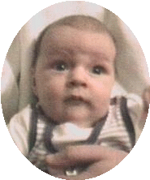
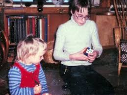
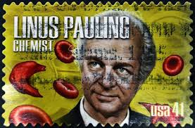
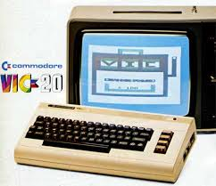
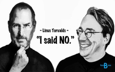
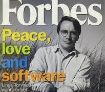

Born into the World: Dec 28, 1969 in Helsinki, Finland

The ever infamous Rubik's cube
Linus with his sister Sara.

His parents named him after the Nobel laureate chemist, Linus Pauling.
He argued he was named after Linus, the blanket-hugging character in Peanuts.

At age 10 he began programming BASIC on his grandfather's Commodore VIC-20
University of Helsinki named an auditorium after him.
Linus in college.
He became a professor at the University of Helsinki.

At a Linux Conference.
Linus and his wife, Tove.
With his wife and kids.
Prior to its initial public offering in 1999, Red Hat gave Torvalds what turned out to be about $1 million in stock.
His Master's thesis was titled "Linux: A Portable Operating System"
Linux Trademark Disputes
He worked at Transmeta for a year, in the late 90s.

Apple’s founder Steve Jobs invited him to work on Apple’s macOS. Linus refused.

Forbes magazine devotes its cover story to Linus Torvalds.
Richard Stallman expresses interest in having the Free Software Foundation distribute a GNU system with the Linux kernel.
He created Git when Bitkeeper shutdown its free service. To him, no other version control system met his needs.
TUX: the Linux Mascot. Linus loves penguins.
An asteroid was named after him, the 9793 Torvalds.
Linus Torvalds receiving 2018 IEEE Masaru Ibuka Consumer Electronics Award at the ICCE 2018 Conference in Las Vegas.
Scuba is his favorite hobby. He created Subsurface, an open source scuba dive logging system.